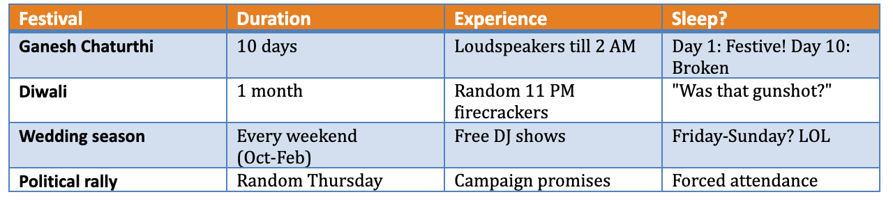
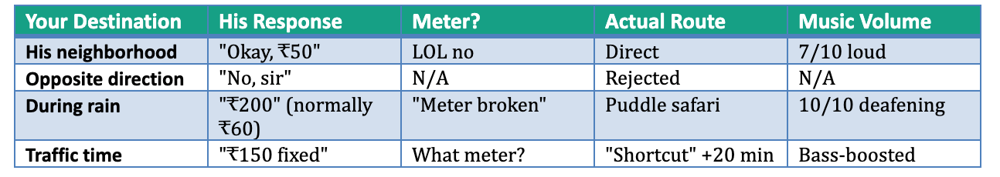
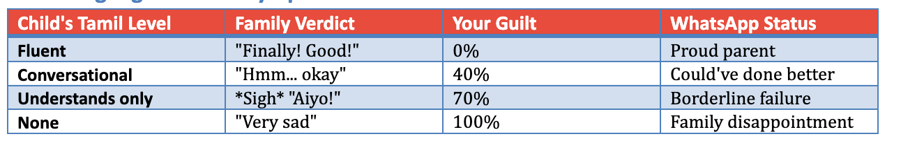
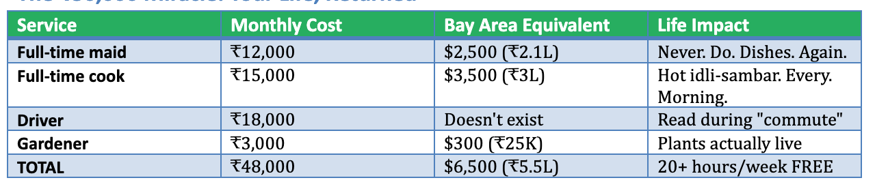
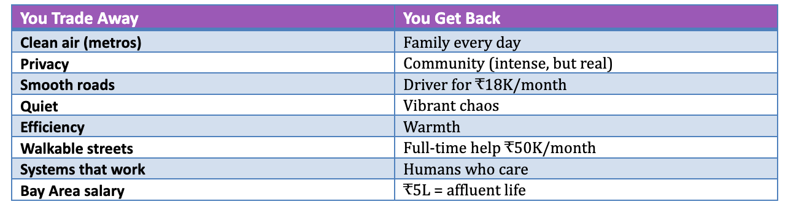

Your ₹10 Cr corpus is ready. Your patience? We'll see.
India Is Not For The Faint-Hearted: A Survival Guide
DISCLAIMER: This is a love letter to India wrapped in satire. Every frustration mentioned comes with deep affection for a country that's messy, loud, warm, and unforgettable. If you can't laugh at the chaos, you won't survive it. But if you can? You're in for the adventure of a lifetime.
Welcome Home: Please Collect Your 47 Identity Cards
In America, you had one ID. Maybe two.In India, you'll collect IDs like Infinity Stones. Each one is essential. None sufficient alone.
In America, you had one ID. Maybe two if you count your passport. In India, you'll collect IDs like Pokémon cards. Gotta catch 'em all.

The beautiful irony: Each ID requires other IDs to obtain it. It's a circular dependency. Like Python code that imports itself.
Welcome home. Your identity is now a collection.
THE CHALLENGES (That Make Great Dinner Stories)
The Air Quality: Now With Fewer Oxygen Molecules
Can You Breathe Today?

Budget tip: Add ₹1-3L annually for air purifiers. Think of it as "breathable air subscription service."
Silver lining: Your morning walks become strategic operations. "AQI below 100? DEPLOY!"
Driving: A Survival Sport With No Rules (Except Honking)
You mastered California driving. Cute.
𝗛𝗲𝗿𝗲'𝘀 𝘆𝗼𝘂𝗿 𝗳𝗶𝗿𝘀𝘁 𝗕𝗮𝗻𝗴𝗮𝗹𝗼𝗿𝗲 𝗺𝗼𝗿𝗻𝗶𝗻𝗴:
Auto-rickshaw cuts across three lanes (lanes are suggestions)
Motorcycle squeezes through gap that doesn't exist (physics optional)
Bus stops mid-road for passengers (stopping zones are Western propaganda)
Someone driving on the wrong side (it's shorter!)
Cow standing in your lane (she's the boss, you wait)
Everyone honking (the horn is a musical instrument)
You've hardly moved 50 meters in 8 minutes
Your Tesla autopilot: ERROR: LOGIC NOT FOUND
The solution: Hire driver for ₹18-20K/month or Use Uber/Ola. Read books during commute. Your blood pressure will thank you.
Silver lining: You'll develop Jedi-level reflexes and pothole detection skills. This is real driving. Everything else was practice.
The Noise Symphony: Your Unsolicited Surround Sound

Special Events Calendar
Public Transportation: Choose Your Adventure
Metro (in cities that have it): Clean. Efficient. Air-conditioned. Works perfectly.
This is the only sentence in this article about things that work. Moving on.

The Bus Experience:
Crowded? That's cute. You haven't experienced crowded until you're:
Standing on one foot
Holding onto someone else's shirt because no handles
Making eye contact with 6 strangers (all pressed against you)
Watching your stop pass because you can't physically move to the exit
Schedule: "The bus comes when it comes. We are not Google Maps. We are artists."
Cost: ₹15
Value: You'll never complain about Bay Area BART again.
Month 1: "It says ₹40 on Google Maps." Auto: "₹150." You: Pays ₹150
Month 6: "₹60 final." Auto: "₹100." You: "₹70." Auto: "₹90." You: Walking away Auto: "Okay okay, ₹70, come!"
Year 2: You have three auto drivers on speed dial. They know your route. They know your kids' school. They attended your housewarming. You're family now.
The Auto Driver is:
✅ Your friend (when he wants to be)
✅ Your philosopher (will share life advice unsolicited)
✅ Your city guide (knows every shortcut and why they're all wrong)
✅ Your Formula 1 driver (lane discipline is a suggestion)
✅ Your DJ (music at volumes that make windows vibrate)
❌ A fan of the meter
The Auto Driver Decision Matrix
Silver lining: By year 2, you'll negotiate like you're at a Mumbai fish market. Your Bay Area colleagues will be impressed and slightly scared.
The Animal Kingdom: Where Your DMV Training Becomes a Joke
Remember the DMV test? You studied "right of way" for weeks. Pedestrians have it. Emergency vehicles have it. Whoever arrives first at a 4-way stop has it.
In India: The concept exists. Just... differently
The Unsolicited Advice Department
In India, everyone is your life coach.
You park perfectly. Uncle from balcony: “LEFT! MORE LEFT! STOP! YOU’LL HIT THE WALL!” You’re three feet away.
You sneeze. Three diagnoses. Five remedies. One baba’s phone number.
Your maid leaves 10 minutes late. Neighbor: “Everything okay?” Translation: Please explain your entire personal crisis.
It’s intrusive. It’s exhausting. It’s also how community shows care.
Here's what nobody warns you about: In India, everyone is an expert on YOUR life.

The truth: This nosiness comes from caring. In the US, your neighbor doesn't know if you're alive or dead. In India, your neighbor knows you sneezed at 3 AM and has already planned your treatment.
It's annoying. It's also community. Choose your poison.
The "Your Child Doesn't Know Tamil?!" Interrogation
Scene: You're unloading groceries. Society aunty materializes.
Vatsala Aunty: "Oh! You're back from America! Call your children, let me see!"
[Kids come down, say "Hello aunty"]
Aunty's face: Visible disappointment
Aunty: "They don't speak Tamil?"
You: "They understand some—"
Aunty: "SOME? This is very sad. My friend's daughter came from Dubai, her children speak perfect Malayalam. You should have sent them to language school. Now they are like foreigners only. How will they talk to their grandparents?"
[Walks away shaking head sadly]
[Next day: Your mother-in-law calls. "Vatsala told me..."]
The Daily Noise Symphony: Your Unsolicited Surround Sound Experience
Your Bay Area mornings: Birds chirping. Coffee brewing. NPR at civilized volume. Peace.
Your India mornings: The Universe has decided silence is a Western conspiracy.
The Doorbell Mystery: A Thriller

Your doorbell rings an average of: 20-25 times per day
Your actual deliveries: 2
Math doesn't math, but this is India
The Midnight Dog Conference: A Corporate Analysis
11:08 PM: Dog #1 spots shadow (leaf). "INTRUDER ALERT!"
11:09 PM: Dog #2, two streets away: "I'M ON IT!" (has no idea what "it" is)
11:10 PM: Dog #3 disagrees but barks anyway. Democracy!
11:12 PM: Dogs #4-15 join without reading agenda. FOMO is real.
11:15 PM: Shadow left 3 minutes ago. Meeting continues.
11:28 PM: Meeting adjourns. No resolution. High energy. Very important.
Meeting schedule: 11 PM, 2 AM, 5 AM, and random emergency sessions
Your attendance: Mandatory
Their productivity: Zero
Their satisfaction: 100%
Silver lining: This is more organized than most corporate meetings you attended in Bay Area.
Wedding Season: Free Concerts You Never Wanted
October through February: Every. Single. Weekend.

The Truth About Indian Noise
It's not bug. It's a feature.
This is how India celebrates. This is how India prays. This is how India lives—loudly, communally, unapologetically.
Your choices:
✅ Option A: Embrace the chaos. Buy headphones. Learn to laugh. Sleep when you can.
✅ Option B: Choose Tier-2/3 city. Still noisy, but 40% less.
✅ Option C: Rural area. Actual peace. But then you're far from everything.
❌ Option D: Expect silence. This will destroy you.
Welcome home. It's loud here. It's always been loud here.
THE JOYS YOUR MONEY UNLOCKS (That Were Impossible in US)
Now for the good news. The real good news.
The Affordable Luxury Revolution
What this means:
Your weekend in Bay Area: Cleaning house, doing laundry, grocery shopping, cooking, dishes, yard work, errands. Collapse by Sunday evening.
Your weekend in India: Wake up to fresh coffee (made by cook). Breakfast ready. House already cleaned. Driver ready for any errands. You actually have time to... live.
This is the luxury you couldn't buy in America for any price.
The Family Equation
Bay Area life:
Parents aging alone, 8,000 miles away
Zoom calls (they're always on mute)
Kids meet grandparents twice a year
You miss father's health declining
Emergency tickets cost ₹3L
Arrive too late
India life:
Father teaches son chess daily
Mother tells daughter stories you forgot
Kids learn culture by osmosis
You're there for doctor visits
Cousins are actual friends, not Facebook profiles
Festivals feel like festivals
This is what you came back for. The money is just money. This is priceless.
The Food Reality

Your cook makes:
Fresh idli for breakfast
Proper sambar (not the restaurant kind)
Rotis that are actually round
Your grandmother's recipe (she taught the cook)
Cost: ₹15K/month
Value: Cannot be measured in rupees
The Freedom You Forgot Existed
In US:
Healthcare tied to job (lose job = lose insurance)
Visa tied to job (lose job = 60 days to leave country)
Must work to survive
Retirement = age 65+
You're a hostage to employment
In India:
Healthcare affordable without job
No visa holding you prisoner
₹10 Cr corpus = actual choice
Can retire at 50 if corpus allows
Time is actually YOURS
The psychological shift:
You wake up without alarm. You pursue passion projects. You volunteer. You teach. You travel on Tuesday afternoons because you can. You're not working to survive—you're living by choice.
This is what financial independence actually means.
You couldn't have this in Bay Area without $5M+. In India, you have it with ₹10 Cr.
THE HONEST TRADE-OFF

This is why you came back. Not for the money. For this.
WHO MAKES IT VS WHO DOESN'T
You'll Thrive If:
✅ You can laugh at chaos instead of fixing it
✅ You value family over infrastructure
✅ You're flexible ("plan B" is always needed)
✅ You focus on gains, not losses
✅ You have sufficient corpus (money reduces friction)
✅ You choose Tier-2/3 cities (less chaos)
✅ You give it 2 years before judging
✅ You find your NRI tribe (others who understand)
✅ You accept unsolicited advice as community care
✅ You master the art of the polite nod (without committing to anything)
You'll Struggle If:
❌ You need systems to work perfectly
❌ You can't handle noise and crowds
❌ You expect Western standards everywhere
❌ You're rigid with plans and routines
❌ You're on a tight budget (stress multiplies problems)
❌ You choose Delhi/Bangalore (maximum culture shock)
❌ You isolate yourself
❌ You constantly compare to US
❌ You take every advice/comment personally
❌ You give up after 6 months

Critical: Don't judge the decision in the first year. Year one is chaos. Year two is when real life begins.
THE REAL DECISION
It's not: "Can I handle India's problems?"
It's: "Are India's joys worth India's chaos?"
For some people: Absolutely yes. Having your father teach your son chess every evening is worth navigating broken sidewalks and pothole Olympics. Eating real dosas and having full-time help is worth breathing questionable air and handling nosy neighbors.
For other people: Absolutely no. No amount of cheap help compensates for infrastructure chaos. No family proximity makes up for lost efficiency and systems that actually work.
Both answers are 100% valid.
THE FINAL WORD
Coming back to India means:
Your kids will learn 3 Tamil phrases max ("Hello aunty," "Namaste," "Bye")
You'll develop a sixth sense for potholes
You'll learn the ambiguous head nod that commits to nothing
You'll hire a driver and stop caring about traffic
You'll budget ₹1.5L/year for air purifiers
You'll accept that advice is free and arrives constantly
You'll master saying "Thank you uncle, I'll think about it" while doing nothing
But you'll also:
Drink real filter coffee every morning
Have your parents nearby for their final years
Never worry about school shootings
Afford help that gives you 20 hours/week back
Watch your corpus grow while living well
Retire young if you want
Experience actual festivals with actual chaos and actual joy
The people who succeed don't find India perfect.
They accept India as beautifully, chaotically, frustratingly, wonderfully imperfect—and choose it anyway.
Your corpus can buy comfort.
It can't buy cultural adaptation.
That part? You have to earn.
Welcome home. You're going to need patience, humor, and air purifiers. But you're also going to eat the best dosas of your life.